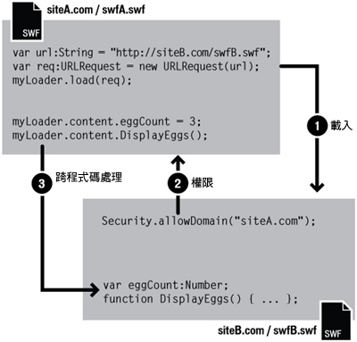

| 套件 | flash.system |
| 類別 | public final class Security |
| 繼承 | Security |
| 語言版本: | ActionScript 3.0 |
| 執行階段版本: | AIR 1.0, Flash Player 9, Flash Lite 4 |
 隱藏繼承公用屬性
隱藏繼承公用屬性 顯示繼承公用屬性
顯示繼承公用屬性| 屬性 | 定義自 | ||
|---|---|---|---|
 | constructor : Object
類別物件的參照或是特定物件實體的建構函數。 | Object | |
| exactSettings : Boolean [靜態]
決定 Flash Player 或 AIR 如何選擇用於特定內容設定的網域，包括攝影機和麥克風權限的設定、儲存配額及持續共享物件的儲存。 | Security | ||
| pageDomain : String [靜態] [唯讀]
包含 SWF 內容的 HTML 網頁的網域部分。 | Security | ||
| sandboxType : String [靜態] [唯讀]
表示呼叫端 檔在其中運作的安全執行程序類型。 | Security | ||
| 方法 | 定義自 | ||
|---|---|---|---|
[靜態]
讓已識別網域中的 SWF 檔存取 SWF 檔 (其中包含 allowDomain() 呼叫) 中的物件和變數。 | Security | ||
[靜態]
可讓已識別之網域中的 SWF 檔和 HTML 檔存取呼叫端 SWF 檔 (使用 HTTPS 通訊協定裝載) 中的物件和變數。 | Security | ||
|
指出物件是否有已定義的指定屬性。 | Object | |
|
指出 Object 類別的實體是否位於指定為參數的物件原型鏈中。 | Object | |
[靜態]
在 url 參數所指定的位置尋找原則檔案。 | Security | ||
|
指出指定的屬性是否存在，以及是否可列舉。 | Object | |
|
為迴圈作業設定動態屬性的可用性。 | Object | |
[靜態]
會在 Flash Player 中顯示「安全性設定」面板。 | Security | ||
|
傳回代表此物件的字串，根據地區特定慣例進行格式化。 | Object | |
|
會傳回指定之物件的字串形式。 | Object | |
|
會傳回指定之物件的基本值。 | Object | |
| 常數 | 定義自 | ||
|---|---|---|---|
| APPLICATION : String = "application" [靜態]
這個檔案是在 AIR 應用程式中執行，而且它是使用該應用程式的套件 (AIR 檔) 來安裝。 | Security | ||
| LOCAL_TRUSTED : String = "localTrusted" [靜態]
這是本機檔案，而且使用者信任這個檔案，它會使用 Flash Player「設定管理員」或 FlashPlayerTrust 設定檔。 | Security | ||
| LOCAL_WITH_FILE : String = "localWithFile" [靜態]
這是本機檔案，使用者不信任這個檔案，而且不是使用網路指派來發佈的 SWF 檔。 | Security | ||
| LOCAL_WITH_NETWORK : String = "localWithNetwork" [靜態]
這是本機檔案，使用者不信任這個檔案，而且它是使用網路指派來發佈的 SWF 檔。 | Security | ||
| REMOTE : String = "remote" [靜態]
這個 檔來自於網際網路 URL，並會在網域型安全執行程序規則下運作。 | Security | ||
exactSettings | 屬性 |
exactSettings:Boolean| 語言版本: | ActionScript 3.0 |
| 執行階段版本: | AIR 1.0, Flash Player 9, Flash Lite 4 |
決定 Flash Player 或 AIR 如何選擇用於特定內容設定的網域，包括攝影機和麥克風權限的設定、儲存配額及持續共享物件的儲存。若要讓 SWF 檔使用與原先在 Flash Player 6 中相同的設定，請將 exactSettings 設定為 false。
在 Flash Player 6 中，用於這些播放程式設定的網域，會依 SWF 檔之網域的開頭部分為準。 如果 SWF 檔的網域包含兩個以上的段落，如 www.example.com，便會移除該網域的第一個段落 ("www")，並使用其餘的部分： example.com。 因此，在 Flash Player 6 中，www.example.com 和 store.example.com 兩者都會使用 example.com 做為這些設定的網域。 同樣的，www.example.co.uk 和 store.example.co.uk 兩者都會使用 example.co.uk 做為這些設定的網域。 在 Flash Player 7 和更新版本中，都會根據預設，依據 SWF 檔的確實網域選擇播放程式設定。例如：來自 www.example.com 的 SWF 檔會使用 www.example.com 的播放程式設定，來自 store.example.com 的 SWF 檔則會使用 store.example.com 的不同播放程式設定。
當 Security.exactSettings 設定為 true 時，Flash Player 或 AIR 將使用確實的網域做為播放程式設定。exactSettings 的預設值為 true。 如果您要將 exactSettings 變更為非預設值，請於必須由 Flash Player 或 AIR 選擇播放程式設定的任何事件 (例如，使用攝影機或麥克風，或是擷取持續的共享物件) 發生之前進行。
如果您之前發佈過版本 6 的 SWF 檔，並從其中建立過持續的共享物件，而現在您有必要從移植到版本 7 或更新版本後的 SWF 檔中，或是不同版本 7 或更新版本 SWF 檔中，擷取持續的共享物件，請在呼叫 SharedObject.getLocal() 之前，將 Security.exactSettings 設定為 false。
實作
public static function get exactSettings():Boolean public static function set exactSettings(value:Boolean):void擲回值
SecurityError — Flash Player 或 AIR 應用程式已經在與播放程式設定有關的決定中，使用過 exactSettings 的值至少一次。
|
pageDomain | 屬性 |
sandboxType | 屬性 |
sandboxType:String [唯讀] | 語言版本: | ActionScript 3.0 |
| 執行階段版本: | AIR 1.0, Flash Player 9, Flash Lite 4 |
表示呼叫端 檔在其中運作的安全執行程序類型。
Security.sandboxType 具有下列其中一個值：
remote(Security.REMOTE)：這個檔案來自網際網路 URL，並且會在網域型安全執行程序規則下運作。localWithFile(Security.LOCAL_WITH_FILE)：這是本機檔案，使用者不信任這個檔案，而且不是使用網路指派來發佈的 SWF 檔。這個 檔可從本機資料來源讀取，但可能無法與網際網路通訊。localWithNetwork(Security.LOCAL_WITH_NETWORK)：這個 SWF 檔是本機檔案，使用者不信任這個檔案，而且已使用網路指派來發佈。SWF 檔可以與網際網路進行通訊，但無法從本機資料來源讀取。localTrusted(Security.LOCAL_TRUSTED)：這是本機檔案，而且使用者信任這個檔案，它會使用 Flash Player「設定管理員」或 FlashPlayerTrust 設定檔。這個 檔可從本機資料來源讀取，並與網際網路通訊。application(Security.APPLICATION)：這個檔案是在 AIR 應用程式中執行，而且它是使用該應用程式的套件 (AIR 檔) 來安裝。根據預設，AIR 應用程式安全執行程序中的檔案可以對任何網域中的任何檔案進行跨指令碼處理 (然而，AIR 應用程式安全執行程序外的檔案可能未獲准對 AIR 檔進行跨指令碼處理)。根據預設，在 AIR 應用程式安全執行程序中的檔案可以從任何網域載入內容和資料。
如需安全性詳細資訊，請參閱「Flash Player 開發人員中心」主題：安全性。
實作
public static function get sandboxType():String相關 API 元素
allowDomain | () | 方法 |
public static function allowDomain(... domains):void| 語言版本: | ActionScript 3.0 |
| 執行階段版本: | AIR 1.0, Flash Player 9, Flash Lite 4 |
讓已識別網域中的 SWF 檔存取 SWF 檔 (其中包含 allowDomain() 呼叫) 中的物件和變數。
注意：從 AIR 應用程式安全執行程序中的程式碼呼叫這個方法，會擲出 SecurityError 例外。在應用程式安全性網域外的內容，無法對應用程式安全執行程序中的內容直接進行跨指令碼處理。不過，應用程式安全執行程序外的內容可以使用安全執行程序橋接，與應用程式安全執行程序中的內容進行通訊。
如果兩個 SWF 檔是從相同的網域中取得的 (例如，http://mysite.com/swfA.swf 及 http://mysite.com/swfB.swf)，則 swfA.swf 可以檢查並修改 swfB.swf 中的變數、物件、屬性及方法等等，而 swfB.swf 也可以對 swfA.swf 執行相同的動作。 這就叫做「跨影片程式碼處理」，或稱為「跨程式碼處理」。
如果兩個 SWF 檔是從不同網域中取得的 (例如，http://siteA.com/swfA.swf 和 http://siteB.com/siteB.swf，則根據預設，Flash Player 不會允許 swfA.swf 為 swfB.swf 編寫程式碼，也不會允許 swfB.swf 為 swfA.swf 編寫程式碼)。 SWF 檔藉由呼叫 Security.allowDomain()，授與其他網域的 SWF 檔權限。這稱為「跨網域程式碼處理」。 藉由 Security.allowDomain("siteA.com")，siteB.swf 能給予 siteA.swf 編寫其程式碼的權限。
在任何跨網域狀況下，清楚分辨牽涉的兩方是很重要的。基於方便討論，執行跨指令碼處理的一方在此稱為「存取的一方」(通常是指要進行存取的 SWF)，另一方則稱為「被存取的一方」(通常是被存取的 SWF 檔)。當 siteA.swf 編寫 siteB.swf 的程式碼時，siteA.swf 會是存取的一方，siteB.swf 則是被存取的一方。

使用 allowDomain() 建立的跨網域權限是不對稱的。 在之前的範例中，siteA.swf 可以編寫 siteB.swf 的程式碼，不過 siteB.swf 無法編寫 siteA.swf 的程式碼，因為 siteA.swf 並未呼叫 allowDomain()，給予位於 siteB.com 之 SWF 檔編寫其程式碼的權限。 您可以讓兩個 SWF 檔都呼叫 allowDomain()，以設定對稱的權限。
Flash Player 除了可以保護 SWF 檔不受到其他 SWF 檔進行跨網域程式碼處理之外，還可以保護 SWF 檔不受到 HTML 檔的跨網域程式碼處理。 HTML-to-SWF 的指令碼處理可以使用舊版的瀏覽器功能 (如 SetVariable) 來進行，或是透過 ExternalInterface.addCallback() 建立的回呼來執行。當 HTML-to-SWF 的程式碼編輯處理跨越網域進行時，就像存取方為 SWF 檔時一樣，被存取的 SWF 檔必須呼叫 allowDomain()，否則這項作業便會失敗。
指定某個 IP 位址做為 allowDomain() 的參數並不會將存取權授與來自該指定 IP 位址的各方。 而是只會對在其 URL 中含有指定之 IP 位址 (不是對應至該 IP 位址的網域名稱) 的一方允許存取。
版本特定差異
Flash Player 的跨網域安全性規則會隨著版本的不同而演進。 下表將摘要說明這些差異。
| 與跨程式碼處理相關的最新 SWF 版本 | 是否需要 allowDomain()？ | 是否需要 allowInsecureDomain()？ | 哪個 SWF 必須呼叫 allowDomain() 或 allowInsecureDomain()？ | allowDomain() 或 allowInsecureDomain() 中可以指定哪些內容？ |
|---|---|---|---|---|
| 5 或更早版本 | 否 | 否 | 不適用 | 不適用 |
| 6 | 是 (如果父網域不符合) | 否 | 被存取的 SWF 檔或任何與被存取之 SWF 檔有相同父網域的 SWF 檔 |
|
| 7 | 是 (如果網域不完全符合) | 是 (如果執行 HTTP-to-HTTPS 存取，即使網域沒有完全符合也一樣) | 被存取的 SWF 檔，或任何與被存取之 SWF 檔有相同網域的 SWF 檔 |
|
| 8 或更新版本 | 是 (如果網域不完全符合) | 是 (如果執行 HTTP-to-HTTPS 存取，即使網域沒有完全符合也一樣) | 被存取的 SWF 檔 |
|
控制 Flash Player 行為的版本是「SWF 版本」(SWF 檔的發佈版本)，而不是 Flash Player 本身的版本。 例如，當 Flash Player 8 在播放發佈為版本 7 格式的 SWF 檔時，Flash Player 會套用與版本 7 一致的行為指令。 這種做法可以確保播放程式的升級動作不會變更已部署 SWF 中的 Security.allowDomain() 行為。
上述表格中的版本欄會顯示與跨程式碼處理作業相關的最新 SWF 版本。 Flash Player 會依據存取方 SWF 檔或被存取方 SWF 檔兩者中較新的版本，來決定它的行為指令。
以下段落會提供與 Security.allowDomain() 有關之 Flash Player 安全性變更的詳細資料。
版本 5。 沒有跨網域程式碼處理限制。
版本 6。 引用跨網域程式碼處理安全性。 根據預設，Flash Player 會禁止跨網域程式碼處理，Security.allowDomain() 則可允許這類作業。 為了要判斷兩個檔案是否位於相同的網域中，Flash Player 會使用每一個檔案的父網域 (也就是完整主機名稱，由檔案的 URL 扣掉第一個段落，剩下最少兩個段落而得)。 例如，www.mysite.com 的父網域是 mysite.com。 來自 www.mysite.com 與 store.mysite.com 的 SWF 檔就可以互相編寫程式碼，而不需要呼叫 Security.allowDomain()。
版本 7。 父網域對應已變更為精確網域對應。 只有在兩個檔案之 URL 中的網域名稱相同時，這兩個檔案才能互相編寫程式碼；否則，就必須呼叫 Security.allowDomain()。 根據預設，從非 HTTPS URL 載入的檔案將無法再編寫從 HTTPS URL 載入之檔案的程式碼，即使這些檔案是從完全相同的網域載入也一樣。 這項限制有助於保護 HTTPS 檔，因為於下載期間，非 HTTPS 的檔案很容易遭到竄改，而且遭到惡意修改的非 HTTPS 檔可能會造成 HTTPS 檔的毀損，所以這項限制可以避免這類事情的發生。 引用 Security.allowInsecureDomain() 雖然可以允許被存取的 HTTPS SWF 檔自動停用這項限制，但是建議您不要使用 Security.allowInsecureDomain()。
版本 8。 有兩個主要變更區域：
- 只有在被存取的 SWF 檔是之前呼叫
Security.allowDomain()的 SWF 檔時，立即呼叫Security.allowDomain()才會授與跨程式碼處理作業的權限。 換句話說，呼叫Security.allowDomain()的 SWF 檔現在只會將權限授與其本身。 在先前的版本中，呼叫Security.allowDomain()會授與跨程式碼處理作業權限，其中被存取的 SWF 檔可以是與呼叫Security.allowDomain()之 SWF 檔位於相同網域的任何 SWF 檔。 之前呼叫Security.allowDomain()會開啟呼叫之 SWF 檔的整個網域。 - 已為
Security.allowDomain("*")及Security.allowInsecureDomain("*")新增了萬用字元值的支援。 萬用字元 (*) 值可允許跨程式碼處理作業，其中存取的檔案可以是從任何位置載入的任何檔案。 請將萬用字元視為通用權限。 在本機檔案安全性規則之下，有必要使用萬用字元權限啟動特定種類的作業。 尤其對於可為網際網路上之 SWF 檔編寫程式碼 (具有網路存取權限) 的本機 SWF 檔，被存取的網際網路 SWF 檔必須呼叫Security.allowDomain("*")，以反映本機 SWF 檔的起源為未知。 (如果網際網路 SWF 檔是由 HTTPS URL 載入，則網際網路 SWF 檔必須改為呼叫Security.allowInsecureDomain("*"))。
有時候您可能會遇到下列情況： 您從不同的網域載入 SWF 子檔案，想讓 SWF 子檔案編寫 SWF 父檔案的程式碼，但是您不知道 SWF 子檔案的最終網域。 例如，當您使用負載平衡重新導向或協力廠商伺服器時，就可能會發生這種情況。
在此情況下，您可以使用傳遞至 Loader.load() 之 URLRequest 物件的 url 屬性。 例如，如果您將 SWF 子檔案載入父輩 SWF，可以存取父輩 SWF 之 Loader 物件的 contentLoaderInfo 屬性：
Security.allowDomain(loader.contentLoaderInfo.url)
請務必等到 SWF 子檔案開始載入，以取得 url 屬性的正確值。 若要判斷 SWF 子檔案何時開始載入，請使用 progress 事件。
相反的情況也可能發生；也就是說，您可能建立了一個 SWF 子檔案，想讓其父輩檔案為其編寫程式碼，但是卻不知道父輩檔案的來源網域為何。 在此情況下，您可以存取顯示物件 (為 SWF 的根物件) 的 loaderInfo 屬性。 在 SWF 子檔案中，呼叫 Security.allowDomain( this.root.loaderInfo.loaderURL)。 您不需等候 SWF 父檔案載入；在載入子系檔案之前，就已經載入父檔案。
如果您是發佈供 Flash Player 8 或更新版使用，也可以藉由呼叫 Security.allowDomain("*") 處理這些情況。 然而，有時候這種方法會是個危險的捷徑，因為它會讓呼叫端 SWF 檔由其他任何網域中的任何其他 SWF 檔存取。 較安全的方法通常是使用 _url 屬性。
如需安全性詳細資訊，請參閱「Flash Player 開發人員中心」主題：安全性。
參數
... domains — 由一個或多個字串或 URLRequest 物件構成其名稱的網域 (您要允許其存取權限的網域)。 您可以指定特殊網域 "*" 以允許所有網域的存取權限。
在 Flash Professional 中，使用「本機播放安全性」選項的「只存取網路」發佈本機 SWF 檔時，指定 "*" 是允許從該檔案存取非本機 SWF 檔的唯一方法。 注意：萬用字元值不適用於子網域。例如， |
擲回值
SecurityError — 從 AIR 應用程式安全執行程序中的程式碼呼叫這個方法，會擲出 SecurityError 例外。在應用程式安全執行程序外的內容，無法對應用程式安全執行程序中的內容進行跨指令碼處理。
|
相關 API 元素
allowInsecureDomain | () | 方法 |
public static function allowInsecureDomain(... domains):void| 語言版本: | ActionScript 3.0 |
| 執行階段版本: | AIR 1.0, Flash Player 9, Flash Lite 4 |
可讓已識別之網域中的 SWF 檔和 HTML 檔存取呼叫端 SWF 檔 (使用 HTTPS 通訊協定裝載) 中的物件和變數。
Flash Player 能提供 allowInsecureDomain() 讓您擁有最大的彈性。但是並不建議呼叫此方法。透過 HTTPS 提供檔案可為您和您的使用者提供多項保護，而呼叫 allowInsecureDomain 則會減弱其中一項保護。
注意：從 AIR 應用程式安全執行程序中的程式碼呼叫這個方法，會擲出 SecurityError 例外。在應用程式安全性網域外的內容，無法對應用程式安全執行程序中的內容直接進行跨指令碼處理。不過，應用程式安全執行程序外的內容可以使用安全執行程序橋接，與應用程式安全執行程序中的內容進行通訊。
此方法的運作方式與 Security.allowDomain() 相同，但是也會允許使用非 HTTPS 通訊協定載入的存取方，以及使用 HTTPS 載入的被存取方的作業。 在 Flash Player 7 及以上版本中，並不允許非 HTTPS 的檔案對 HTTPS 檔進行程式碼編寫。 當透過 HTTPS 存取的 SWF 檔使用 allowInsecureDomain() 方法時，此方法就會提升這項限制。
請只使用 allowInsecureDomain()，讓非 HTTPS 的檔案能夠對 HTTPS 檔編寫程式碼。 當存取端非 HTTPS 檔及被存取端 HTTPS 檔都位於相同網域中 (例如，位於 http://mysite.com 的 SWF 檔想要為位於 https://mysite.com 的 SWF 檔編寫程式碼) 時，則可以使用此方法允許編寫程式碼。 請勿在非 HTTPS 檔、HTTPS 檔之間，或是 HTTPS 檔至非 HTTPS 檔之間，使用此方法來允許編寫程式碼。 針對這些情況，請改用 allowDomain()。
allowInsecureDomain()，將會如何危及安全性。
請注意，下列資訊只是一個可能的案例，它是設計藉由跨程式碼處理的實際情況範例，協助您瞭解 allowInsecureDomain()。 它並沒有包含所有安全性架構的問題，並且僅應做為背景資訊使用。 Flash Player Developer Center 包含 Flash Player 及安全性的詳盡資訊。 如需詳細資訊，請參閱「Flash Player 開發人員中心」主題：「安全性」。
假設您正建立一個電子商務網站，該網站包含兩個組件： 一個是類別目錄，並不需要安全性設定，因為其中只有包含公用資訊；另一個則是購物車/結帳組件，需要安全性設定，才能夠保護使用者的金融及個人資訊。 假設您計劃透過 http://mysite.com/catalog.swf 提供類別目錄，並且透過 https://mysite.com/cart.swf 提供購物車。 那麼您的網站應具備的其中一項必要條件，就是第三者無法利用安全性架構中的弱點，竊取使用者的信用卡號碼。
試想，有個第三方攻擊者侵入您的伺服器與使用者之間的通訊，嘗試竊取使用者輸入至購物車應用程式的信用卡號碼。 這個第三者可能會是部分使用者使用的惡劣 ISP，或是使用者工作場合中心懷不軌的管理員 (任何能夠檢視或修改透過公開的網際網路，在您的使用者及伺服器之間傳送的網路封包的人)。 這個情況十分常見。
如果 cart.swf 是使用 HTTPS 將信用卡資訊傳送到您的伺服器，第三方攻擊者就無法直接從網路封包中竊取這項資訊，因為 HTTPS 傳輸有經過加密。 然而，攻擊者還是可以使用其他技術：修改您其中一個 SWF 檔的內容 (因為它將會傳送給該使用者)，然後取代您的 SWF 檔，成為會將使用者資訊傳送給其他伺服器 (由攻擊者所擁有) 的已修改版本。
在許多方法中，HTTPS 通訊協定可以讓這種「修改」攻擊無法運作，因為除了它會進行加密之外，HTTPS 傳輸具有抵抗竄改的能力。 當第三方攻擊者修改封包時，接受方將會偵測到修改，並且捨棄該封包。 如此，攻擊者就無法在這種情況下修改您的 cart.swf，因為它是透過 HTTPS 傳遞的。
然而，假設您想要讓 catalog.swf (經由 HTTP 提供) 中的按鈕將項目加入至 cart.swf (經由 HTTP 提供) 中的購物車。 為了達成這個功能，cart.swf 會呼叫 allowInsecureDomain() (允許 catalog.swf 編寫 cart.swf 的程式碼)。 這個動作會造成非預期的後果： 現在，攻擊者就可以修改原本由使用者下載的 catalog.swf，因為 catalog.swf 是透過 HTTP 傳遞的，而且沒有抵抗竄改的能力。 接著，攻擊者修改過的 catalog.swf 就可以對 cart.swf 編寫程式碼，因為 cart.swf 包含對 allowInsecureDomain() 的呼叫。 修改過的 catalog.SWF 檔可以使用 ActionScript 存取 cart.swf 中的變數，並且藉此讀取使用者的信用卡資訊，以及其他機密資料。 之後，修改過的 catalog.swf 便可以將這些資料傳送到攻擊者的伺服器。
很明顯地，這項實作並不是一般使用者會想要的，但是您應該仍然會想要在您的網站上，允許兩個 SWF 檔進行跨程式碼處理。 以下是兩個可能的方式，可用來重新設計這個假定的電子商務網站，以避免使用 allowInsecureDomain()：
- 透過 HTTPS 提供應用程式中的所有 SWF 檔。 這是目前最簡單也最可靠的解決方案。 在上述的案例中，您會透過 HTTPS 提供 catalog.swf 及 cart.swf。 當您將檔案 (例如 catalog.swf) 從透過 HTTP 提供，切換為透過 HTTPS 提供時，可能會感覺到頻寬的使用及伺服器的 CPU 負擔會有稍微的提升，而且使用者會感覺到應用程式的載入時間有稍微增加。 您需要在實際的伺服器上進行試驗，判斷這些影響的嚴重性；一般而言，它們不會降低超過 10-20% 的效能，而且有時候甚至連一點影響也沒有。 通常您可以在伺服器上使用加速 HTTPS 的硬體或軟體來改善這個結果。 透過 HTTPS 提供所有相關的 SWF 檔的主要優點之一，就是您可以使用 HTTPS URL，做為使用者的瀏覽器中的主要 URL，而不會讓瀏覽器產生任何混合內容的警告。 此外，瀏覽器將會顯示鎖定圖示，為您的使用者提供常見且可信任的安全性指示。
- 使用 HTTPS-to-HTTP 的程式碼，而不要使用 HTTP-to-HTTPS 的程式碼。 在上述的案例中，您可以將使用者的購物車內容儲存在 catalog.swf 中，並且只有 cart.swf 管理結帳程序。 結帳時，cart.swf 可從 catalog.swf 中的 ActionScript 變數擷取購物車內容。 HTTP-to-HTTPS 的程式碼限制是不對稱的；雖然系統無法安全地允許透過 HTTP 傳遞的 catalog.swf 檔為透過 HTTPS 傳遞的 cart.swf 檔編寫程式碼，但是 HTTPS cart.swf 檔則可以為 HTTP catalog.swf 檔編寫程式碼。 這個方法比所有 HTTPS 方法還要嚴密；您必須謹慎地注意，不要信任任何透過 HTTP 傳遞的 SWF 檔，因為它很容易遭到竄改。 例如，當 cart.swf 擷取說明購物車內容的 ActionScript 變數時，cart.swf 中的 ActionScript 程式碼並無法確信這個變數中的值，就是您預期的格式。 您必須謹慎驗證購物車的內容不含無效的資料，因為這些資料可能會使 cart.swf 採取非預期的動作。 但是，您還是必須瞭解仍然有中間廠商透過修改 catalog.swf，將有效但是不正確的資料提供給 cart.swf 的風險；例如，替換使用者購物車中的項目。 一般的結帳程序會透過顯示購物車內容及總金額，讓使用者能夠做最後的確認，以稍稍地降低這個風險，但是這個風險仍然會存在。
多年來，網頁瀏覽器已加強了 HTTPS 與非 HTTPS 檔之間的區隔，而上述的案例正好示範了使用這項限制的最佳理由。 當您有絕對必要時，Flash Player 可提供您解除這項安全性限制的功能，但是在如此做之前，請務必謹慎考量它可能會帶來的後果。
如需安全性詳細資訊，請參閱「Flash Player 開發人員中心」主題：安全性。
參數
... domains — 由一個或多個字串或 URLRequest 物件構成其名稱的網域 (您要允許其存取權限的網域)。 您可以指定特殊網域 "*" 以允許所有網域的存取權限。
在 Flash 編寫工具中，使用「只存取網路」的「本機播放安全性」設定 (「檔案 > 發佈設定 > Flash」索引標籤) 發佈本機 SWF 檔時，指定 "*" 是允許從該檔存取非本機 SWF 檔的唯一方法。 注意：萬用字元值不適用於子網域。例如， |
擲回值
SecurityError — 從 AIR 應用程式安全執行程序中的程式碼呼叫這個方法，會擲出 SecurityError 例外。在應用程式安全執行程序外的內容，無法對應用程式安全執行程序中的內容進行跨指令碼處理。
|
相關 API 元素
loadPolicyFile | () | 方法 |
public static function loadPolicyFile(url:String):void| 語言版本: | ActionScript 3.0 |
| 執行階段版本: | AIR 1.0, Flash Player 9, Flash Lite 4 |
在 url 參數所指定的位置尋找原則檔案。Adobe AIR 和 Flash Player 會使用原則檔案，決定是否允許應用程式從其他伺服器 (而不是從自己的伺服器) 載入資料。請注意，雖然方法名稱是 loadPolicyFile()，但檔案其實會等到有需要原則檔案的網路要求時才會載入。
只要利用 Security.loadPolicyFile()，Flash Player 或 AIR 就可以從任意位置載入原則檔案，如下列範例所示：
Security.loadPolicyFile("http://www.example.com/sub/dir/pf.xml");
這樣一來，Flash Player 或 AIR 將嘗試從指定的 URL 擷取原則檔。任何由該位置上的原則檔案所賦予的權限，都將套用到伺服器裡虛擬目錄階層裡相同或較低層級中的所有內容。
例如，接在之前的程式碼之後的以下各行不會擲出例外：
import flash.net.*;
var request:URLRequest = new URLRequest("http://www.example.com/sub/dir/vars.txt");
var loader:URLLoader = new URLLoader();
loader.load(request);
var loader2:URLLoader = new URLLoader();
var request2:URLRequest = new URLRequest("http://www.example.com/sub/dir/deep/vars2.txt");
loader2.load(request2);
不過，下列程式碼則會擲回安全性例外：
import flash.net.*;
var request3:URLRequest = new URLRequest("http://www.example.com/elsewhere/vars3.txt");
var loader3:URLLoader = new URLLoader();
loader3.load(request3);
您可以使用 loadPolicyFile()，載入任何數目的原則檔案。 每當有要求使用原則檔案的需求時，Flash Player 或 AIR 會等到原則檔案下載完畢時，才會拒絕該要求。如果沒有任何以 loadPolicyFile() 指定的原則檔案授權要求的動作，在最後的查詢，Flash Player 或 AIR 會諮詢原始的預設位置。
檢查主原則檔時，Flash Player 會稍待三秒等候伺服器回應。如果沒有接到回應，Flash Player 即認定主原則檔不存在。但是，loadPolicyFile() 呼叫並無預設的逾時值，Flash Player 會假設所呼叫的檔案是存在的，若有必要載入就一直等候。因此，如果您要確定已載入主原則檔，請使用 loadPolicyFile() 明確地呼叫。
您不可以連接到常用的保留連接埠。完整的封鎖連接埠清單，請參閱在「ActionScript 3.0 開發人員指南」中的「限制網路 API」。
合併使用 xmlsocket 通訊協定與特定的埠號可讓您直接從 XMLSocket 伺服器擷取原則檔案，如下列範例所示。通訊端連線不受限於上述的保留連接埠限制。
Security.loadPolicyFile("xmlsocket://foo.com:414");
這樣一來，Flash Player 或 AIR 會從指定的主機與連接埠取得原則檔案。與特定的連接埠建立連線後，Flash Player 或 AIR 會將 <policy-file-request /> 傳送過去，並以 null 位元組終止。伺服器必須傳送 null 位元組以終止原則檔案，可能因此關閉連線；如果伺服器沒有關閉連線，Flash Player 或 AIR 會在收到終止的 null 位元組之後結束連線。
您可以避免 SWF 檔使用這個方法，只要設定包含 SWF 內容之 HTML 頁面中的 object 和 embed 標籤的 allowNetworking 參數即可。
如需安全性詳細資訊，請參閱「Flash Player 開發人員中心」主題：安全性。
參數
url:String — 要載入原則檔案的 URL 位置。
|
showSettings | () | 方法 |
public static function showSettings(panel:String = "default"):void| 語言版本: | ActionScript 3.0 |
| 執行階段版本: | AIR 1.0, Flash Player 9, Flash Lite 4 |
會在 Flash Player 中顯示「安全性設定」面板。這個方法不適用於 Adobe AIR 中的內容；在 AIR 應用程式中呼叫它不會有作用。
參數
panel:String (default = "default")SecurityPanel.DEFAULT。
|
相關 API 元素
APPLICATION | 常數 |
public static const APPLICATION:String = "application"| 語言版本: | ActionScript 3.0 |
| 執行階段版本: | AIR 1.0, Flash Lite 4 |
這個檔案是在 AIR 應用程式中執行，而且它是使用該應用程式的套件 (AIR 檔) 來安裝。此內容包含在 AIR 應用程式資源目錄中 (即安裝應用程式內容的位置)。
相關 API 元素
LOCAL_TRUSTED | 常數 |
public static const LOCAL_TRUSTED:String = "localTrusted"| 語言版本: | ActionScript 3.0 |
| 執行階段版本: | AIR 1.0, Flash Player 9, Flash Lite 4 |
這是本機檔案，而且使用者信任這個檔案，它會使用 Flash Player「設定管理員」或 FlashPlayerTrust 設定檔。這個 檔可從本機資料來源讀取，並與網際網路通訊。
相關 API 元素
LOCAL_WITH_FILE | 常數 |
public static const LOCAL_WITH_FILE:String = "localWithFile"| 語言版本: | ActionScript 3.0 |
| 執行階段版本: | AIR 1.0, Flash Player 9, Flash Lite 4 |
這是本機檔案，使用者不信任這個檔案，而且不是使用網路指派來發佈的 SWF 檔。在 Adobe AIR 中，本機檔案不在應用程式資源目錄中；這種檔案放在應用程式安全執行程序中。這個 檔可從本機資料來源讀取，但可能無法與網際網路通訊。
相關 API 元素
LOCAL_WITH_NETWORK | 常數 |
public static const LOCAL_WITH_NETWORK:String = "localWithNetwork"| 語言版本: | ActionScript 3.0 |
| 執行階段版本: | AIR 1.0, Flash Player 9, Flash Lite 4 |
這是本機檔案，使用者不信任這個檔案，而且它是使用網路指派來發佈的 SWF 檔。 檔可以與網際網路進行通訊，但無法從本機資料來源讀取。
相關 API 元素
REMOTE | 常數 |
public static const REMOTE:String = "remote"| 語言版本: | ActionScript 3.0 |
| 執行階段版本: | AIR 1.0, Flash Player 9, Flash Lite 4 |
這個 檔來自於網際網路 URL，並會在網域型安全執行程序規則下運作。
相關 API 元素
click 事件來顯示 Flash Player 設定中的「本機儲存設定」面板。 首先會使用 draw() 將橘黃色方塊加入舞台。 在 draw() 中，加入名為 clickHandler() 的 click 事件偵聽程式，指示 Flash Player 開啟它的「本機儲存設定」面板以回應 click 事件。
package {
import flash.display.Sprite;
import flash.text.TextField;
import flash.events.*;
import flash.system.Security;
import flash.system.SecurityPanel;
public class SecurityExample extends Sprite {
private var bgColor:uint = 0xFFCC00;
private var size:uint = 100;
public function SecurityExample() {
draw();
}
private function draw():void {
var child:Sprite = new Sprite();
child.graphics.beginFill(bgColor);
child.graphics.drawRect(0, 0, size, size);
child.graphics.endFill();
child.buttonMode = true;
var label:TextField = new TextField();
label.text = "settings";
label.selectable = false;
label.mouseEnabled = false;
child.addChild(label);
child.addEventListener(MouseEvent.CLICK, clickHandler);
addChild(child);
}
private function clickHandler(event:MouseEvent):void {
Security.showSettings(SecurityPanel.LOCAL_STORAGE);
}
}
}
Tue Jun 12 2018, 03:47 PM Z